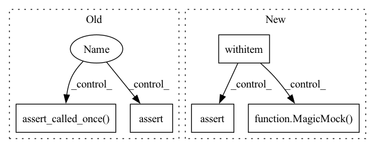

Pattern ID :35196

Before Change
runner = MLRunner(experiment_config=experiment_config, container=container)
with patch.object(container, "get_data_module"):
with patch.object(container, "on_run_extra_validation_epoch") as mock_on_run_extra_validation_epoch:
with patch("health_ml.run_ml.create_lightning_trainer") as mock_create_trainer:
runner.setup()
mock_trainer = MagicMock()
mock_storing_logger = MagicMock()
mock_create_trainer.return_value = mock_trainer, mock_storing_logger
runner.init_training()
assert runner.trainer == mock_trainer
assert runner.storing_logger == mock_storing_logger
mock_trainer.validate = Mock()
if run_extra_val_epoch:
with patch.object(runner, "validate_model_weights") as mock_validate_model_weights:
runner.run_validation()
mock_validate_model_weights.assert_called_once()
assert mock_on_run_extra_validation_epoch.called == run_extra_val_epoch
assert hasattr(container.model, "on_run_extra_validation_epoch")
assert mock_trainer.validate.called == run_extra_val_epoch
After Change
ml_runner_with_run_id.init_training()
mock_datamodule = MagicMock()
with patch("health_ml.run_ml.create_lightning_trainer") as mock_create_trainer:
with patch.object(ml_runner_with_run_id.container, "get_data_module", return_value=mock_datamodule):
mock_trainer = MagicMock()
mock_create_trainer.return_value = mock_trainer, MagicMock()
ml_runner_with_run_id.init_inference()
assert ml_runner_with_run_id.trainer == mock_trainer
mock_trainer.validate = Mock()
ml_runner_with_run_id.run_validation()
if run_extra_val_epoch or run_inference_only:
mock_trainer.validate.assert_called_once()
assert mock_trainer.validate.call_args[1]["ckpt_path"] == ml_runner_with_run_id.inference_checkpoint
assert mock_trainer.validate.call_args[1]["datamodule"] == mock_datamodule
else:
assert "Skipping extra validation" in caplog.messages[-1]
mock_trainer.validate.assert_not_called()
In pattern: SUPERPATTERN
Frequency: 3
Non-data size: 5
Instances
Fragment ID: 100252921
Project Name: microsoft/hi-ml
Commit Name: 3d632766440a7856712cb0ba40ee6f5cac9fd5c1
Time: 2023-01-18
Author: 37396332+kenza-bouzid@users.noreply.github.com
File Name: hi-ml/testhiml/testhiml/test_run_ml.py
M Class Name: AnonimousClass
N Class Name: AnonimousClass
M Method Name: test_run_validation(4)
N Method Name: test_run_validation(1)
M Parent Class:
N Parent Class:
M File Name: hi-ml/testhiml/testhiml/test_run_ml.py
N File Name: hi-ml/testhiml/testhiml/test_run_ml.py
M Start Line: 165
M End Line: 195
N Start Line: 270
N End Line: 292
'>
Before Change
ml_runner_with_run_id.container.max_num_gpus = 0
ml_runner_with_run_id.container.max_epochs += 10
assert ml_runner_with_run_id.checkpoint_handler.trained_weights_path
with patch.multiple(ml_runner_with_run_id, run_validation=mock.DEFAULT, run_inference=mock.DEFAULT) as mocks:
ml_runner_with_run_id.run()
assert mocks["run_validation"].called == run_extra_val_epoch
mocks["run_inference"].assert_called_once()
def test_model_weights_when_resume_training() -> None:
experiment_config = ExperimentConfig(model="HelloWorld")
After Change
ml_runner_with_run_id.container.max_epochs += 10
assert ml_runner_with_run_id.checkpoint_handler.trained_weights_path
mock_trainer = MagicMock()
with patch("health_ml.run_ml.create_lightning_trainer", return_value=(mock_trainer, MagicMock())):
with patch.object(ml_runner_with_run_id.container, "get_checkpoint_to_test") as mock_get_checkpoint_to_test:
with patch.object(ml_runner_with_run_id, "run_inference") as mock_run_inference:
with patch.object(ml_runner_with_run_id, "after_ddp_cleanup") as mock_after_ddp_cleanup:
mock_get_checkpoint_to_test.return_value = MagicMock(is_file=MagicMock(return_value=True))
ml_runner_with_run_id.run()
mock_after_ddp_cleanup.assert_called_once()
mock_get_checkpoint_to_test.assert_called_once()
assert mock_trainer.validate.called == run_extra_val_epoch
mock_run_inference.assert_called_once()
'>
Fragment ID: 100252925
Project Name: microsoft/hi-ml
Commit Name: 3d632766440a7856712cb0ba40ee6f5cac9fd5c1
Time: 2023-01-18
Author: 37396332+kenza-bouzid@users.noreply.github.com
File Name: hi-ml/testhiml/testhiml/test_run_ml.py
M Class Name: AnonimousClass
N Class Name: AnonimousClass
M Method Name: test_resume_training_from_run_id(2)
N Method Name: test_resume_training_from_run_id(2)
M Parent Class:
N Parent Class:
M File Name: hi-ml/testhiml/testhiml/test_run_ml.py
N File Name: hi-ml/testhiml/testhiml/test_run_ml.py
M Start Line: 352
M End Line: 357
N Start Line: 414
N End Line: 426
'>
Before Change
container.run_extra_val_epoch = True
runner = MLRunner(experiment_config=experiment_config, container=container)
with patch.object(container, "get_data_module"):
with patch("health_ml.run_ml.create_lightning_trainer") as mock_create_trainer:
runner.setup()
mock_create_trainer.return_value = MagicMock(), MagicMock()
runner.init_training()
with patch.object(runner, "validate_model_weights") as mock_validate_model_weights:
runner.run_validation()
mock_validate_model_weights.assert_called_once()
latest_message = caplog.records[-1].getMessage()
assert "Hook `on_run_extra_validation_epoch` is not implemented by lightning module." in latest_message
def test_run_inference(ml_runner_with_container: MLRunner, tmp_path: Path) -> None:
After Change
runner.checkpoint_handler.additional_training_done()
runner.container.outputs_folder.mkdir(parents=True, exist_ok=True)
with patch.object(container, "get_data_module"):
with patch("health_ml.run_ml.create_lightning_trainer", return_value=(MagicMock(), MagicMock())):
with patch.object(runner.container, "get_checkpoint_to_test") as mock_get_checkpoint_to_test:
mock_get_checkpoint_to_test.return_value = MagicMock(is_file=MagicMock(return_value=True))
runner.init_inference()
runner.run_validation()
latest_message = caplog.records[-1].getMessage()
assert "Hook `on_run_extra_validation_epoch` is not implemented" in latest_message
def test_run_inference(ml_runner_with_container: MLRunner, regression_datadir: Path) -> None:
'>
Fragment ID: 100252932
Project Name: microsoft/hi-ml
Commit Name: 3d632766440a7856712cb0ba40ee6f5cac9fd5c1
Time: 2023-01-18
Author: 37396332+kenza-bouzid@users.noreply.github.com
File Name: hi-ml/testhiml/testhiml/test_run_ml.py
M Class Name: AnonimousClass
N Class Name: AnonimousClass
M Method Name: test_model_extra_val_epoch_missing_hook(1)
N Method Name: test_model_extra_val_epoch_missing_hook(1)
M Parent Class:
N Parent Class:
M File Name: hi-ml/testhiml/testhiml/test_run_ml.py
N File Name: hi-ml/testhiml/testhiml/test_run_ml.py
M Start Line: 232
M End Line: 244
N Start Line: 303
N End Line: 316